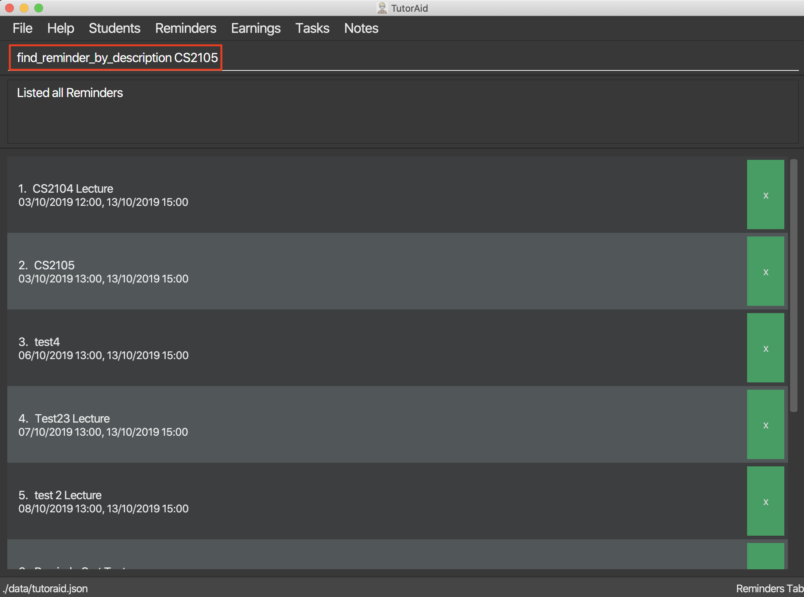
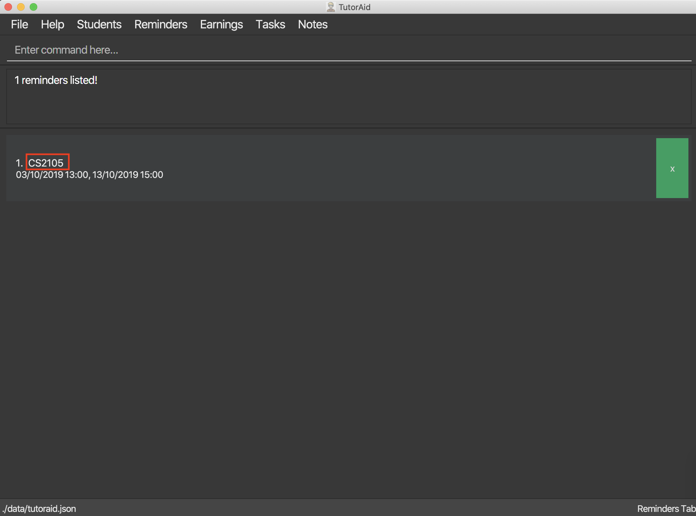
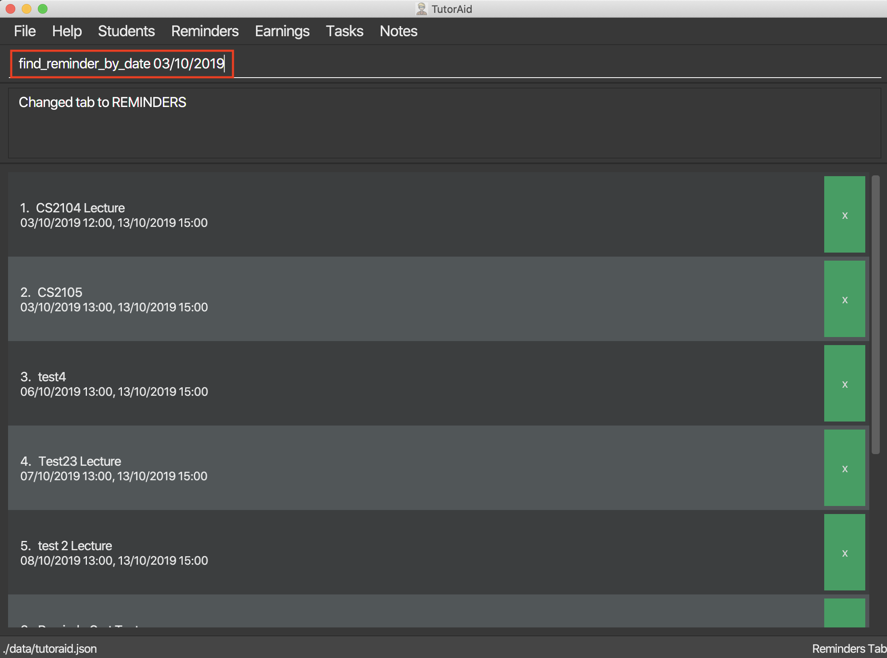
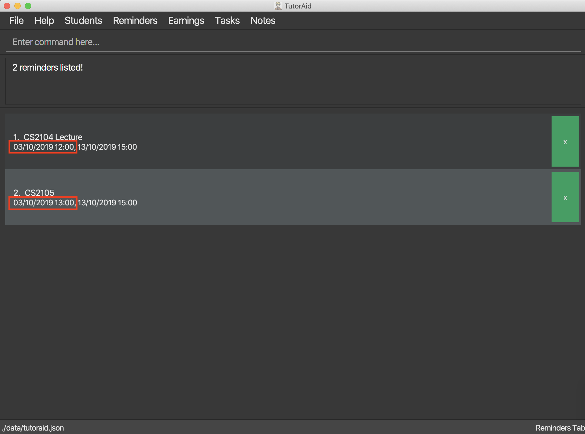
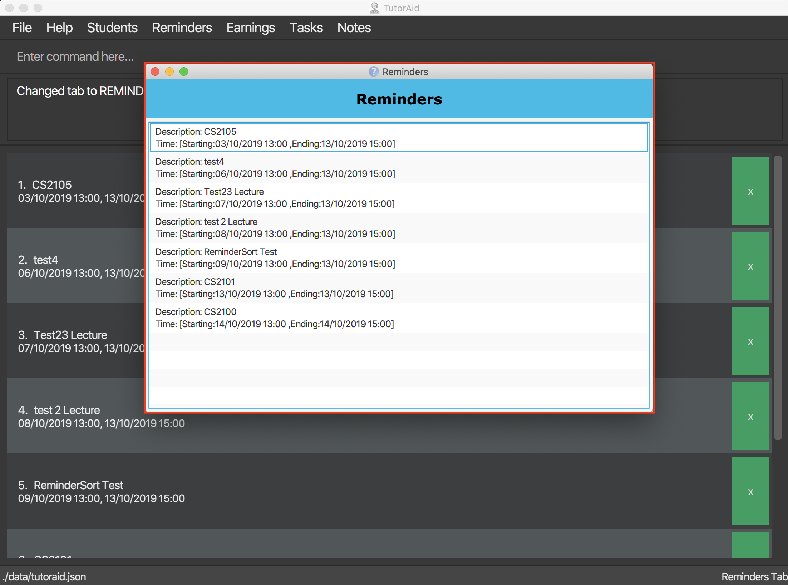

Overview
TutorAid is a handy application that was created for tutors and teaching assistants in NUS School of Computing to help improve their workflow and save time by better organizing all the information they require in one central location. It is a Command Line Interface (CLI) based tool to cater to computing professionals who are highly adept at typing but also provides a Graphical User Interface (GUI) interface for users to easily view and interact with TutorAid.
TutorAid boasts well thought out features which have been carefully selected and reviewed to fit the exact needs of our target audience. All of TutorAid’s features and implementations are well documented in guides for users and developers respectively.

Role
My main role was to prototype and develop the Reminders feature, the Calendar feature and the Graphical User Interface. The login command required me to think of how to put up a login window that only shows the main window when the user has logged in successfully. It also required me to think of how to encrypt the passwords stored and how to check whether they are valid as well. I also did the Earning feature where it tracks what earnings you have earned throughout the weeks. It has a claim status that allows you to see if you have claimed your earnings from your respective faculties.
Summary of contributions
-
Major enhancement: added the ability to undo/redo previous commands
-
What it does: allows the user to undo all previous commands one at a time. Preceding undo commands can be reversed by using the redo command.
-
Justification: This feature improves the product significantly because a user can make mistakes in commands and the app should provide a convenient way to rectify them.
-
Highlights: This enhancement affects existing commands and commands to be added in future. It required an in-depth analysis of design alternatives. The implementation too was challenging as it required changes to existing commands.
-
Credits: {mention here if you reused any code/ideas from elsewhere or if a third-party library is heavily used in the feature so that a reader can make a more accurate judgement of how much effort went into the feature}
-
-
Minor enhancement: added a history command that allows the user to navigate to previous commands using up/down keys.
-
Code contributed: [Functional code] [Test code] {give links to collated code files}
-
Other contributions:
-
Project management:
-
Managed releases
v1.3-v1.5rc(3 releases) on GitHub
-
-
Enhancements to existing features:
-
Documentation:
-
Did cosmetic tweaks to existing contents of the User Guide: #14
-
-
Community:
-
Tools:
-
Integrated a third party library (Natty) to the project (#42)
-
Integrated a new Github plugin (CircleCI) to the team repo
-
-
{you can add/remove categories in the list above}
Contributions to the User Guide
Given below are sections I contributed to the User Guide. They showcase my ability to write documentation targeting end-users. |
User Interface

Change tab : tab
Change tab to any of the available ones.
Format: change_tab tab/DESTINATION
Examples (All available destinations listed):
-
change_tab tab/earnings -
change_tab tab/calendar -
change_tab tab/student_profile -
change_tab tab/reminders -
change_tab tab/notepad -
change_tab tab/task
The user may alternatively choose to change tab by using the Items on the Menu Bar.
Reminders
Add Reminder
Adds reminders.
Format: addReminder rd/DESCRIPTION rt/DATE
Examples:
-
add_reminder rd/CS2103T Homework rt/13/10/2019 13:00, 13/10/2019 15:00
Finding Reminders based on Description : find_reminder_by_description
Find specific reminders by description and list them.
Format: find_reminder_by_description DESCRIPTION …
Examples:
-
find_reminder_by_description CS2103T
 
-
find_reminder_by_description CS2103T, cs2100
Finding Reminders based on Date : find_reminder_by_date
Find specific reminders by date and list them.
Format: find_reminders_by_date DATE …
Examples:
-
find_reminders_by_date 13/10/2019
 
Listing all reminders : list_reminder
List all reminders.
Format: list_reminder
Reminder Window
The Reminder Window will pop up when Tutoraid is first loaded up.
It will list all the Reminders at hand.

Calendar View
Views the Task in Calendar View
|
Clicking on a date will show the user the Tasks with that date as its Start Time in normal list view. The Calendar will display the tasks starting on that date and the amount of tasks starting on that date. |

Contributions to the Developer Guide
Given below are sections I contributed to the Developer Guide. They showcase my ability to write technical documentation and the technical depth of my contributions to the project. |